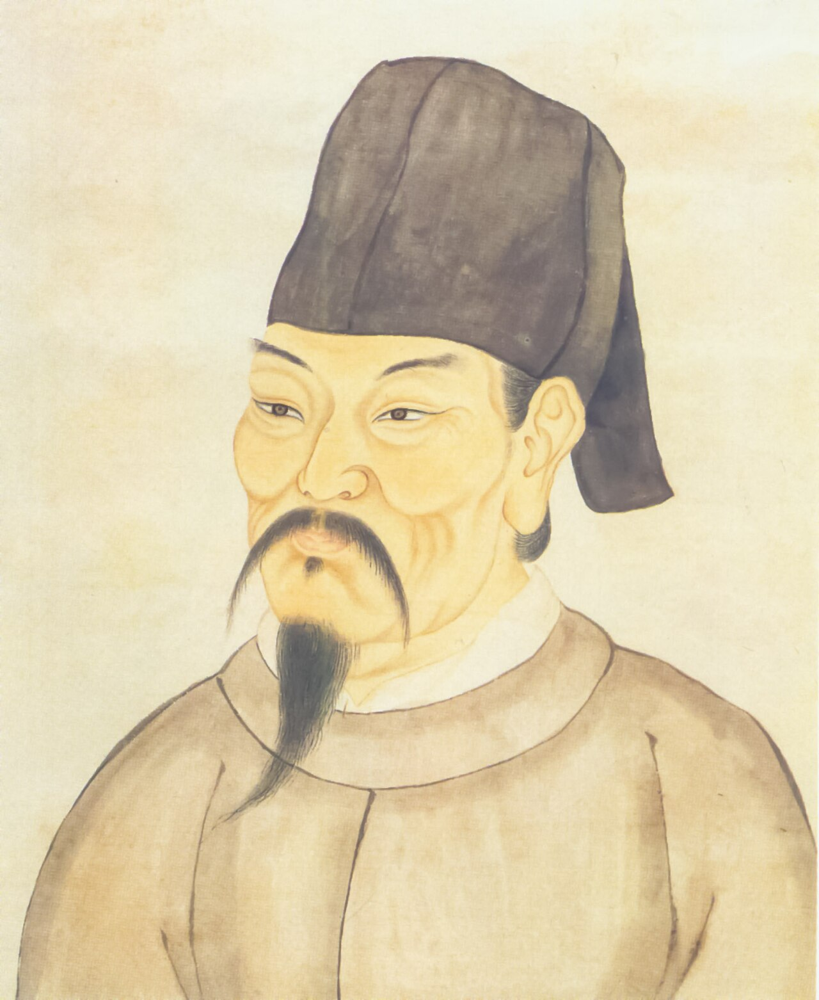

空山新雨后天气晚来秋
After fresh rain in the empty mountains,
the evening air turns autumnal.
TANG POETRY · BILINGUAL DIGITAL EDITION
山居秋暝 · 王维
How does an “empty” mountain become a place where one may remain?
Original project SVG · no historical reconstruction
THE CORE INTERACTION
Drag freely, use the range control, or select a line below. Each stop keeps the Chinese text, project translation and matching image in one view.
After fresh rain in the empty mountains,
the evening air turns autumnal.
The bright moon shines
between the pines.
A clear spring flows
over stones.
Bamboo resounds—
the washerwomen return.
Lotus leaves stir—
a fishing boat moves downriver.
Let spring blossoms fade:
Wangsun—you may remain.

THE POET BEHIND THE SCROLL
Poet, painter, musician and statesman of the High Tang.
Wang Wei (701–761) is remembered for landscape poems in which a few precise details—moonlight, water, bamboo, distant voices—make quiet space perceptible. In Autumn Evening in the Mountains, people enter through sound and movement, so the “empty mountain” gradually becomes an inhabited world.
This Qing-dynasty image is a later cultural portrait, not a likeness made during Wang Wei’s lifetime.
CONTINUE READING